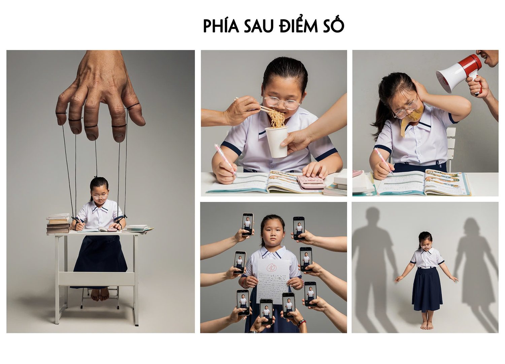
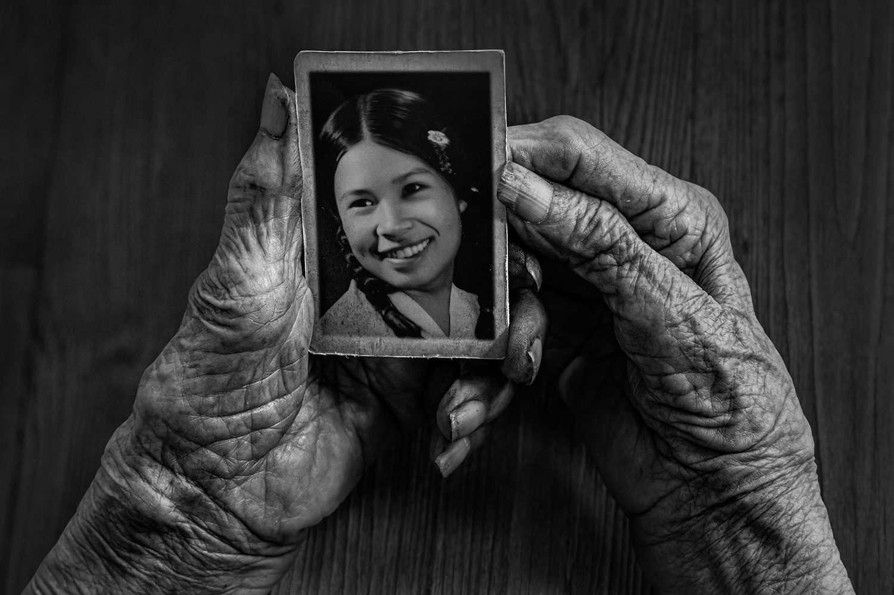
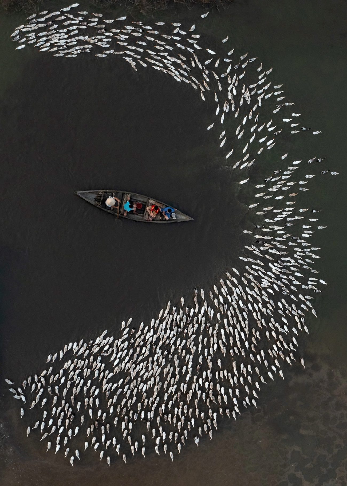

Phía sau điểm số
Huy chương VàngFestival Nhiếp ảnh trẻ 2025 · Ảnh ý tưởng
Từ năm 2015, ống kính của Phan Minh Thọ hướng về những khoảnh khắc đời thường — con người và cuộc sống xứ biển — với tư duy hiện đại nhưng vẫn đậm chất quê.


